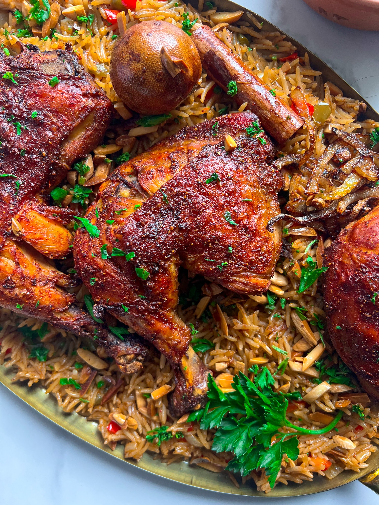
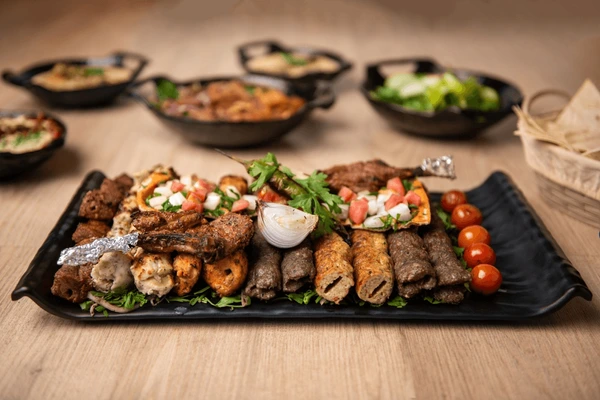
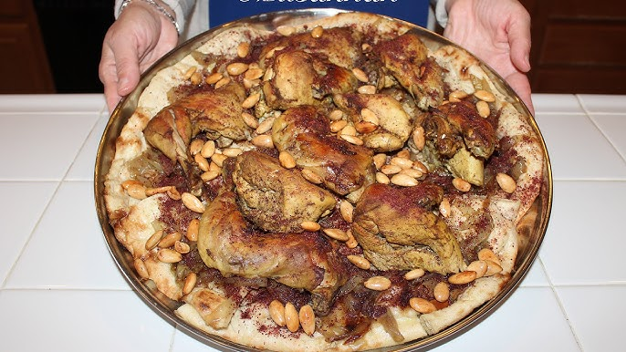
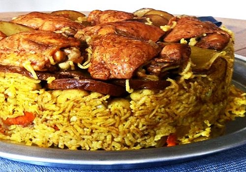
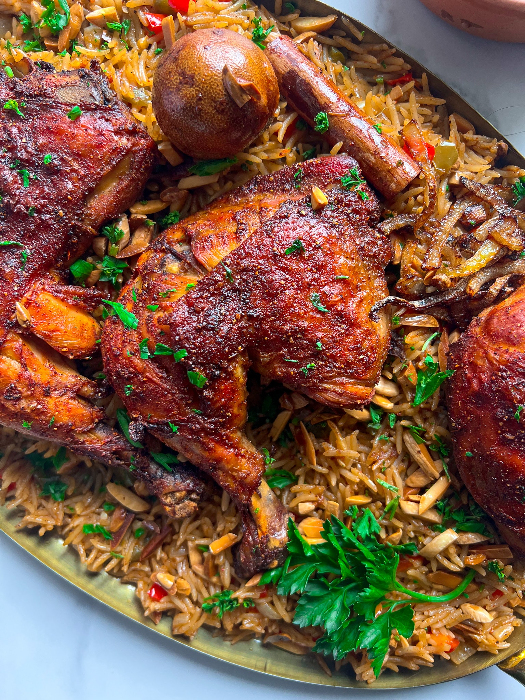
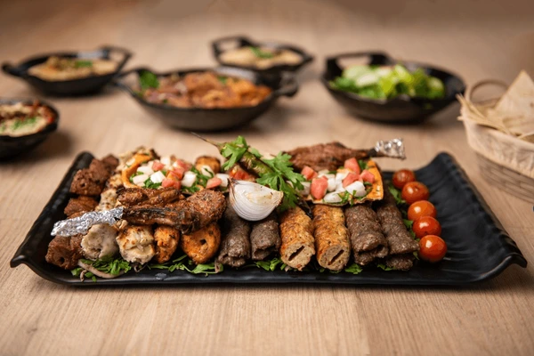
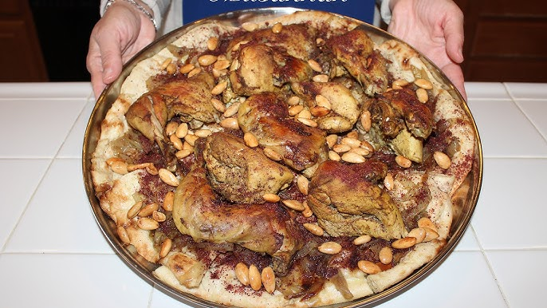
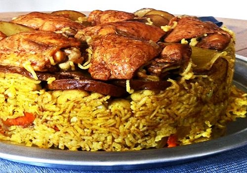
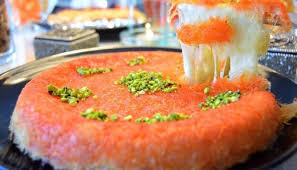
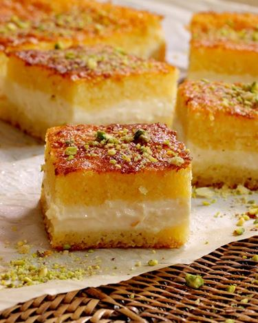

| The Meal | Price | Description |
|---|---|---|
| Mandi | $10 | A homemade mandi that's made with fresh, locally sourced ingredients.  |
| Mix Grills | $12 | A mix of grilled chicken, vegetables, and seafood.  |
| Shawarma | $7 | A classic Palestinian shawarma made with locally sourced ingredients.
|
| Molokhia | $15 | A traditional Palestinian dish contains Moulkhia ,Rice and (chicken,Meat) made with locally sourced
ingredients. |
| Musakhan | $20 | roast chicken, heavily scented with sumac and and a few other warm spices and served with
caramelized onion flatbread.  |
| maqlopa | $11 | Maqlopa consists of meat, rice, and fried vegetables placed in a pot which is flipped upside down
when served.  |
| mansaf | $20 | lamb cooked in a sauce of fermented dried yogurt and served with rice. |
| Sweet type | Price | Description |
|---|---|---|
| Kunafa | $2 | A traditional, Middle Eastern dessert made with fine semolina dough, soaked in sweet, sugar-based
syrup, then layered with cheese, or with ingredients such as cream and nuts.  |
| Baqlawa | $4 | a sweet, flaky pastry made with layers of phyllo dough, filled with chopped nuts and soaked in syrup
or honey. |
| Basbousa | $3 | a delicious Middle Eastern Semolina cake soaked in simple syrup that comes together in under an hour
with minimal effort.  |
| Drink type | Price | Description |
|---|---|---|
| Chat | $0.5 | |
| Rani Drink | $1 | |
| blu | $7 |